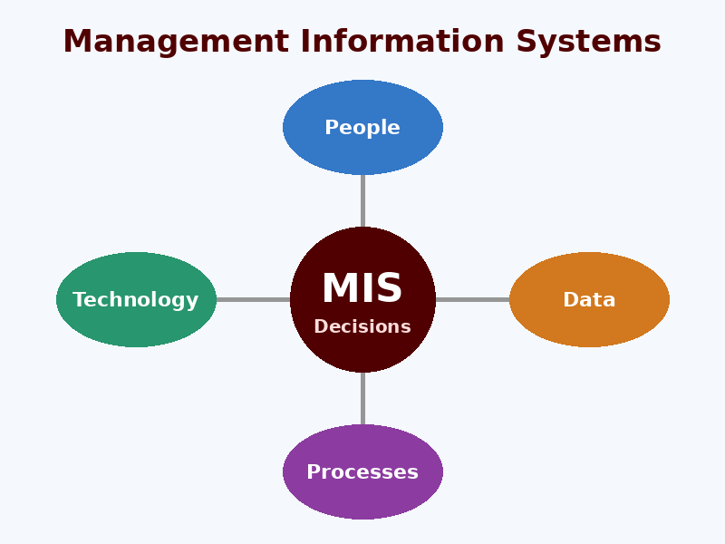

MIS & AI EthicsWebsite OverviewStudent NameOctober 29, 2026 Welcome to my website, where I explore how Management Information Systems (MIS) and Artificial Intelligence (AI) work together to shape modern business. MIS connects people, technology, data, and business processes so that organizations can make faster and smarter decisions. Leading sources such as Gartner, MIT Technology Review, and CIO Magazine report on how these technologies change every day. On the AI Usage page you will learn the ethical and unethical ways students can use AI in college. The Security page explains malware, hackers, and why protecting information matters for every organization. Finally, the About Us page shares what I learned from this project about MIS, AI, and security. AI-polished version: This website examines how Management Information Systems (MIS) and Artificial Intelligence (AI) work together to transform modern business. MIS unites people, technology, data, and processes so organizations can make faster, better-informed decisions. Trusted industry publications such as Gartner, MIT Technology Review, and CIO Magazine track how these tools evolve. The AI Usage page distinguishes ethical from unethical uses of AI in college. The Security page covers malware and hackers, and explains why protecting information is vital to every organization. Lastly, the About Us page reflects on what this project taught me about MIS, AI, and cybersecurity.
|